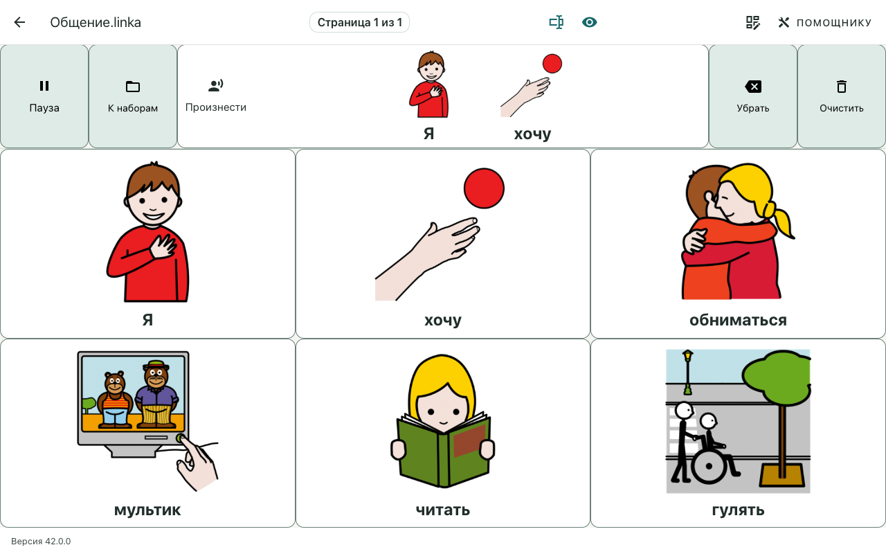
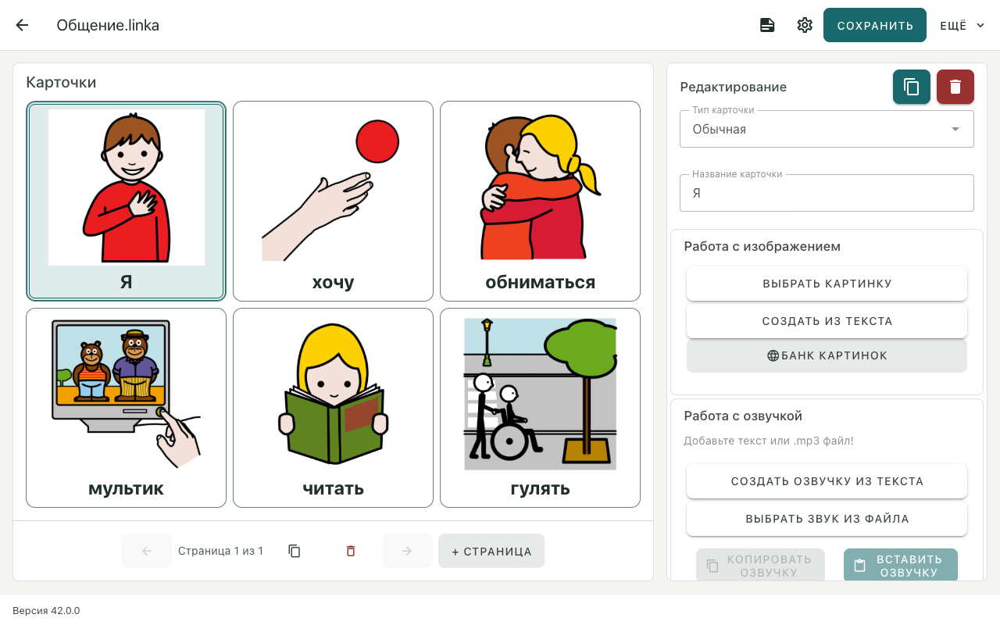
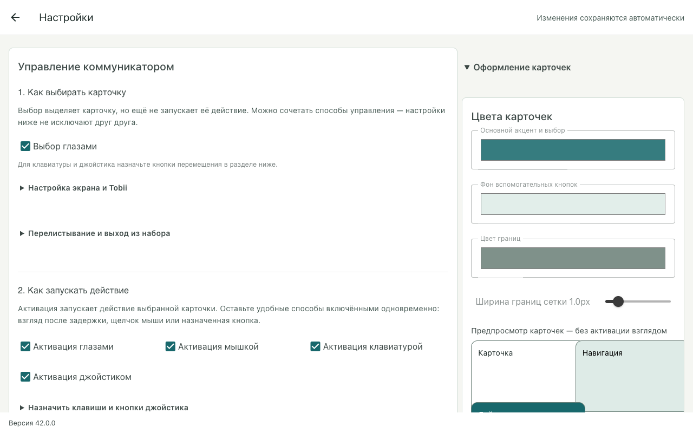
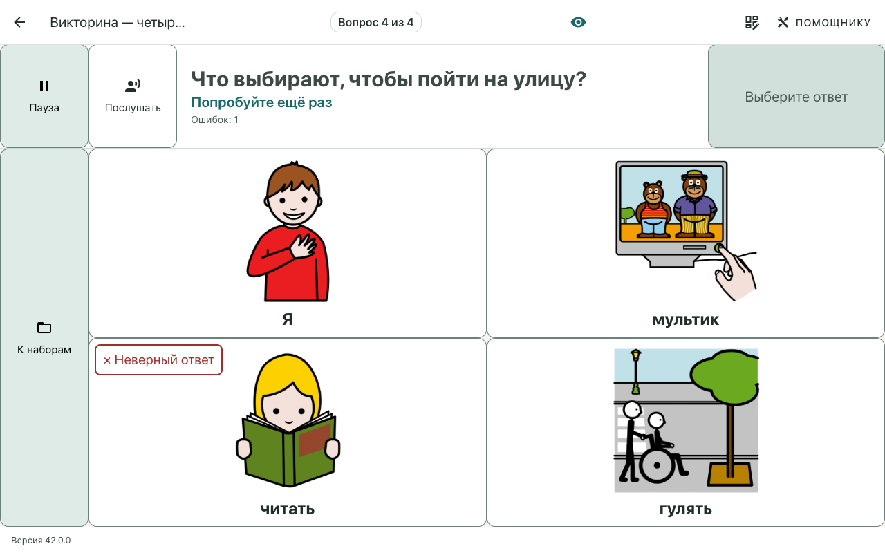
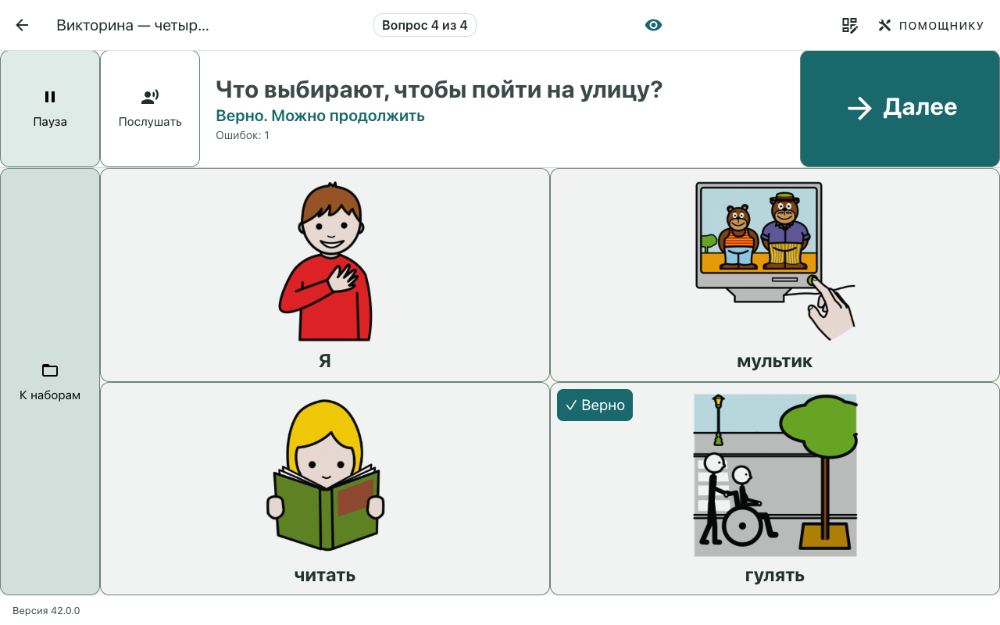
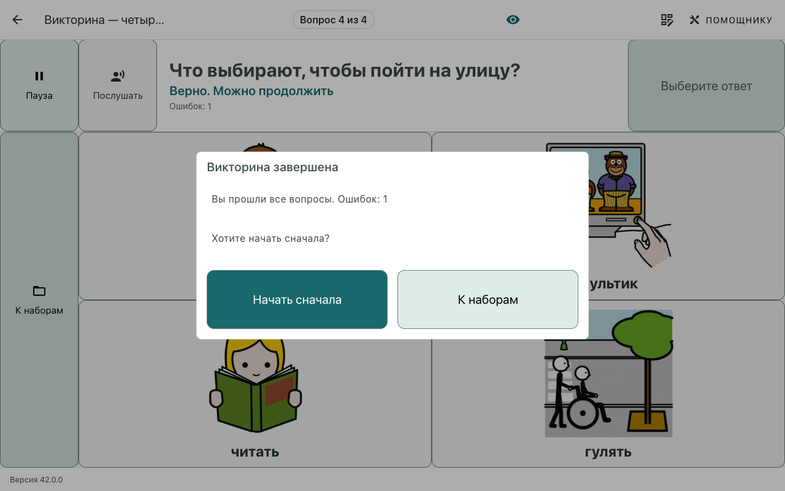
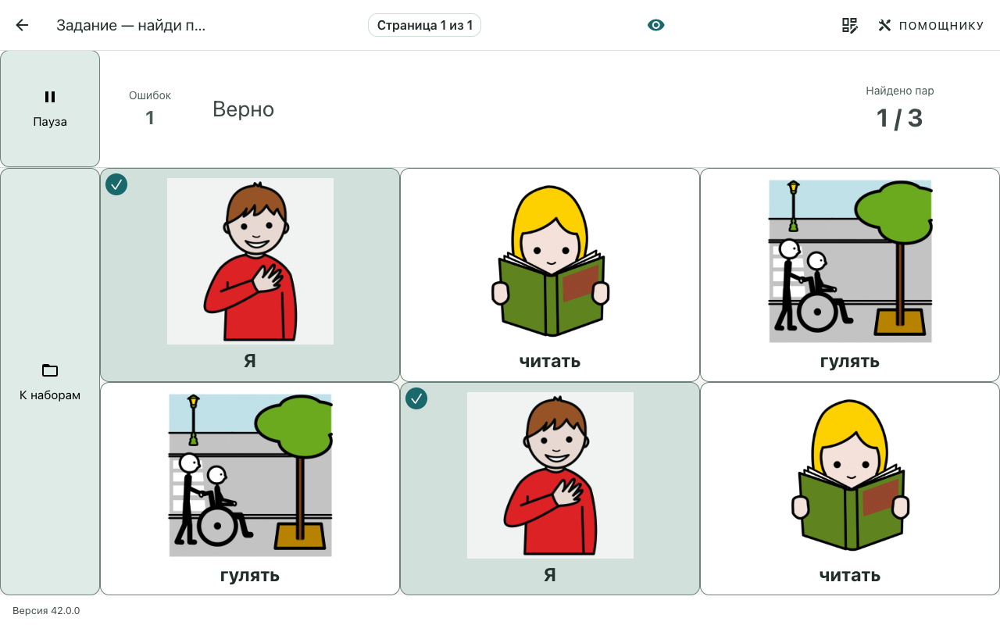
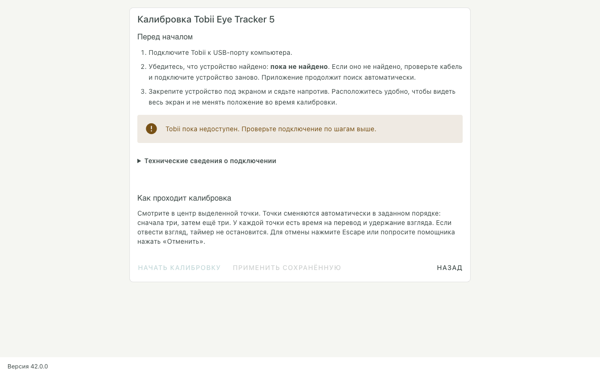
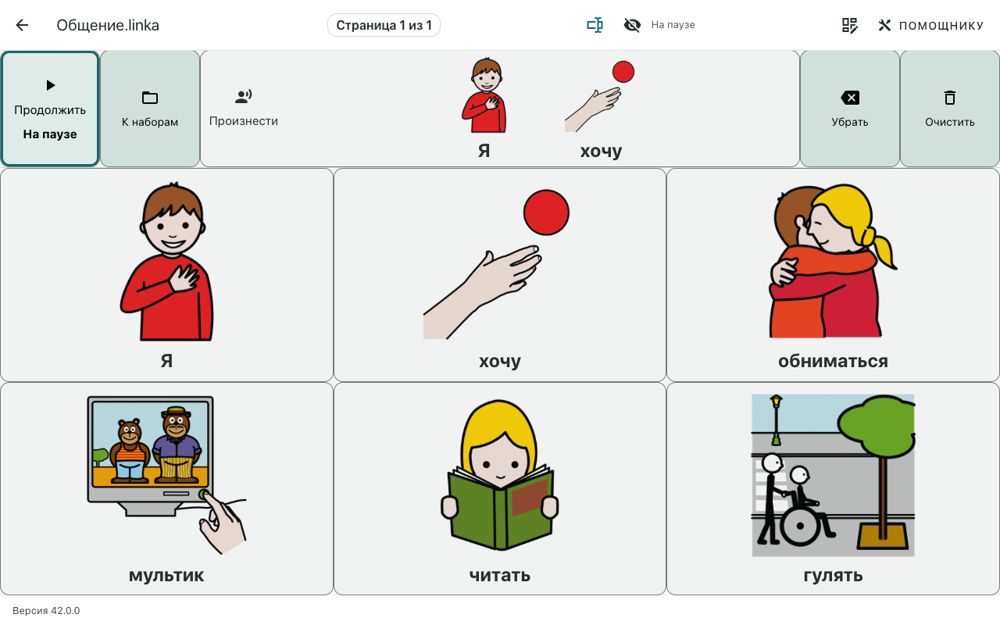

LINKa. смотри · визуальное и UX-обновление · 17 октября 2026
Мягче. Спокойнее. По-прежнему чётко.
Обновлённый интерфейс для человека, который общается карточками, и помощника, который готовит приложение к работе.
Универсальный, не детский стильКарточки остаются главными
01 / Общение
Меньше отвлечений
Спокойная навигация, крупные подписи и различимые состояния без яркой заливки всей карточки.
02 / Помощник
Больше определённости
Группы настроек, ясное сохранение, понятные подтверждения и рабочие состояния ожидания и ошибки.
Фон #F6F7F4
Поверхность #FFFFFF
Акцент #197377
Навигация #E2EEEA
Граница #778C84
Функциональная граница на фоне: 3,33:1. Белый текст на основном акценте: 5,59:1. Основной текст на фоне: 12,13:1.
Бережное обновление. Сохранённые цвета, размер текста, задержка выбора и раскладки не сбрасываются. Новые стандартные цвета доступны через схему «Спокойная». Для новых настроек подписи карточек начинаются с 24 px.
Основной пользователь / общение
Содержание важнее инструментов
Мягкие служебные поверхности, белые карточки и устойчивое расположение целей.

Настоящий экран 1280 × 800. Учебные изображения из встроенного публичного набора «Фраза»; личные данные не использованы.
Было: яркие голубые кнопки и оранжевые линии.Стало: приглушённая навигация и различимые серо-зелёные границы. Неиспользуемые боковые полосы убраны: карточки получают больше места. Новую геометрию необходимо проверить на рабочем устройстве.
Было: крупный прогресс поверх изображения.Стало: компактное кольцо в углу и внутренний контур текущей карточки. Индикатор не вращается бесконечно после окончания задержки.
Было: карточки сообщения были вложенными кнопками.Стало: неинтерактивный предпросмотр внутри одной области произнесения; добавлены названия действий паузы, очистки и удаления последнего элемента.
Служебные операции собраны в зоне «Помощнику». Пауза, отображение и возврат остаются непосредственно доступны.
Помощник / редактор
Выбор виден. Действия понятны.
Редактор перестал выделять карточку ярко-жёлтой заливкой; опасные действия больше не путаются с сохранением.

Карточки и инспектор разделены; у помощника сохраняется прокрутка длинной формы.
Выделение и структура.Лёгкая акцентная поверхность, чёткий контур и доступные признаки выбора. Управление страницами собрано в одном месте. Узкое окно переводит редактор в одну колонку.
Сохранение не закрывает редактор.«Сохранить» оставляет рабочий экран открытым. В меню «Ещё» — отдельные «Сохранить и выйти» и «Сохранить копию». Стрелка листает страницы, а «+ Страница» создаёт новую.
Изображение и озвучка.Банк изображений показывает загрузку, пустой результат и ошибку; устаревший поисковый ответ не подменяет новый. Для фразы предусмотрено многострочное поле и состояния операций.
Название, изображение и озвучка идут перед свёрнутыми параметрами размера. Сохранение не очищает рабочий архив: скопированная озвучка остаётся доступной. Готовый файл заменяется после полной записи нового ZIP.
Помощник / настройки
Настройка без угадывания
Текст объясняет последствия, предпросмотр показывает результат, статус сообщает об автосохранении.

В небольшом окне блоки выстраиваются вертикально; служебная страница прокручивается отдельно от приложения.
Было: «Цвет №1», «Цвет №2» и неточный стандартный пресет.Стало: названия по назначению и живой предпросмотр. Начальная схема и пресет используют один источник значений. Чёрно-белая схема восстанавливает различимую толщину границы.
Настройки следуют задаче.Выбор карточки → запуск действия → задержка → безопасная проба. Второстепенные параметры раскрываются по необходимости. Пробная карточка подтверждает срабатывание без речи и переходов.
Было: скрытое ожидание при назначении клавиши и прослушивании.Стало: понятное состояние ожидания, отмена назначения через Escape, загрузка и ошибка при голосовом примере.
Системный шрифт с кириллицей не требует Google Fonts: оформление не ждёт внешней загрузки и остаётся предсказуемым offline.
Основной пользователь / задания
Спокойная обратная связь
Текущий вопрос и продвижение важнее красного счётчика ошибок.

Визуальная обратная связь больше не сводится к маленькому счётчику: ответ отмечен на карточке, следующий шаг указан под вопросом.
Ошибки остаются доступны, но не доминируют.Нейтральный подписанный счётчик, ясное завершение и конкретное «Начать сначала». В соотнесении найденные пары получают знак завершения без сильного затемнения изображения.
Исправлен источник нестабильного оформления.Стили викторины изолированы: прежнее «scope» не ограничивало селекторы и могло менять заголовки и строки вывода на других экранах.
Состояния не прячутся за пустым экраном.Неоткрывшийся набор показывает объяснение и повтор. Для задания без доступных пар предусмотрено понятное сообщение для помощника.
Декоративное движение сокращено. Прогресс выбора остаётся функциональной обратной связью и не исчезает вместе с декоративной анимацией.
Дополнение / викторина / вопрос 4 из 4
Последний вопрос, а не сетка 4×4
Четвёртый вопрос из четырёх. Четыре варианта ответа; строки составления сообщения нет.

Реальная викторина пройдена от первого вопроса. Один счётчик «Вопрос 4 из 4»; вопрос остаётся видимым и после правильного ответа.
Задача пользователя.Выбрать подходящую карточку к вопросу «Что выбирают, чтобы пойти на улицу?». Это выбор ответа в задании, не составление фразы.
Ошибочный выбор.После выбора «читать» остаётся тот же вопрос и появляется «Ошибок: 1». Неверный ответ не переводит автоматически дальше в этом примере.
Верный выбор.После выбора «гулять» становится доступна крупная кнопка «Далее». Она завершает четвёртый вопрос и открывает итог.
Пример использует существующий режим викторины с ручным переходом. Правила задания и автоматического перехода не менялись.
Дополнение / завершение викторины
Четыре вопроса пройдены
Итог после одного ошибочного выбора: результат, повтор и понятный возврат к наборам.

За диалогом карточки не принимают выбор взглядом. Итог не перекрывает работу другого режима задания.
Начать сначала.Крупное действие повторяет викторину. Отдельная команда «К наборам» завершает работу с этим набором.
Исправлен возврат.Новый тест выявил, что обычный переход назад перехватывался открытым диалогом. Теперь диалог закрывается и выполняется явный переход в папку набора.
Проверено действием, а не макетом.Тест проходит вопросы 1–4, делает ошибку, завершает задание и кнопкой возвращается в библиотеку. Затем открывает соотнесение пар.
Результат показан спокойно: число ошибок доступно, но не превращает весь итоговый экран в красное предупреждение.
Дополнение / соотнесение пар
Найти пару — тоже задание
Выбор карточки в одной строке, поиск соответствия в другой. Без строки коммуникации.

Найдена 1 из 3 пар. Галочки обозначают завершённую пару; изображения остаются читаемыми. Счётчик ошибок отражает предшествующую неверную попытку.
Сначала выбор.Подложка и метка «Выбрано» отличают сделанный выбор от наведения взглядом. Инструкция меняется на «Выберите карточку из другой строки».
Неверная пара.Первый выбор сохраняется. Следующую попытку можно сделать, выбрав только другую карточку в противоположной строке.
Пара найдена.Обе карточки получают знак завершения и больше не выбираются. Счётчик показывает продвижение «1 / 3».
Отдельно сохранены исходное задание, выбранная карточка, неверная пара и найденная пара — PNG можно отправить без всего отчёта.
Оборудование / системные сценарии
Честные инструкции и состояния

Устройство не подключено — это явно показано. Снимок не имитирует успешную аппаратную калибровку.
Калибровка без неоновых эффектов.Убраны искры, вращение и взрыв. Сохранены размер, расположение целей и существующие тайминги. Добавлена видимая отмена для помощника.
Инструкция соответствует текущей процедуре.Точки сменяются последовательно; текст больше не обещает свободный выбор и сброс таймера при отведении взгляда.
Диалоги говорят, что произойдёт.Установка обновления, удаление, перемещение и сохранение получили конкретные подписи. Ошибки обновления доступны для просмотра, а не растягивают нижнюю строку.
Стабильная активация.Поле кода получило понятную подпись; подтверждение остаётся на месте и объясняет недоступность, вместо внезапного появления.
Граница изменений.Авторизация, разрешение статистики, алгоритм Tobii и форматы хранения не перерабатывались. Их визуальная подача улучшена без подмены пользовательского выбора.
UX / самостоятельность и обратимость
Пауза — не тупик
Постоянная кнопка в левом верхнем углу рабочей области общения и заданий.

«Продолжить» остаётся в списке gaze-целей. Карточки и перелистывание на паузе не активируются.
Исправлена причина недоступного продолжения.Кнопка сохраняет gaze-класс, а список целей принудительно обновляется при смене паузы. E2E проверяет возобновление через eye-enter / eye-click по реальным IPC-координатам, не только кликом мыши.
Случайную очистку можно отменить.После «Очистить» в том же месте появляется «Вернуть». Оно восстанавливает всю фразу; буфер не переносится между наборами.
Произнесение видно без угадывания.Область сообщения подписана «Произнести», во время речи — «Говорю…». В заданиях вместо неё находятся вопрос и результат выбора.
Аппаратная точность, заметность углового прогресса и утомляемость требуют проверки с реальным Tobii. Декоративное упрощение не заменяет пользовательское испытание.
Проверки / передача результата
Что проверено и что ещё важно
Снимки получены из запущенного Electron с изолированными тестовыми данными, а не из макета.
Проверка
Результат
Форматирование, типы, зависимости, сборка
Prettier, TypeScript, Knip и production build — успешно. У сборки осталось предупреждение о размере JS-чанка.
ESLint
Исходники, тесты и инструменты: 0 ошибок, 0 предупреждений. Общая команда блокируется старым сгенерированным каталогом dist_electron; он не изменялся.
Unit-тесты
169 пройдены, 1 пропущен существующей конфигурацией. Включены сохранение без выхода, сохранность медиа, ошибка записи и отказ озвучки.
Electron E2E
14 из 14 пройдены за 33,3 с. Включены gaze-возобновление через IPC, восстановление фразы, сохранение без выхода и задания.
Реальные экраны
Общение, пауза, редактор, настройки, викторина, подготовка Tobii. Снимки 1280 × 800 и 800 × 600; дополнительно проверен масштаб 200%.
Основные сценарии
Карточки сообщения не образуют вложенных кнопок; пауза и возобновление; диалог викторины блокирует нижние карточки; ошибка открытия объяснена.
Стандартные цвета
Автоматический расчёт контраста акцента, текста и функциональных границ.
Не заменяется автоматическими тестами
Проверка точности и утомляемости на реальном Tobii с основным пользователем.
Индивидуальная читаемость плотных клавиатур и длинных подписей на рабочей дистанции.
Подбор пользовательской схемы при особенностях зрения. Произвольные сохранённые цвета могут иметь другой контраст.
Безопасное внедрение. Изменения подготовлены для локального коммита. Публикация и установка не выполнялись. Перед выдачей пользователям требуется аппаратная проверка; внешний вид не доказывает точность калибровки.
Повторная генерация PDF: node scripts/visual-report.mjs. Снимки: tests/e2e/visual-refresh.spec.ts. Экранные изображения включают версию тестового Electron, а не номер пользовательского релиза.